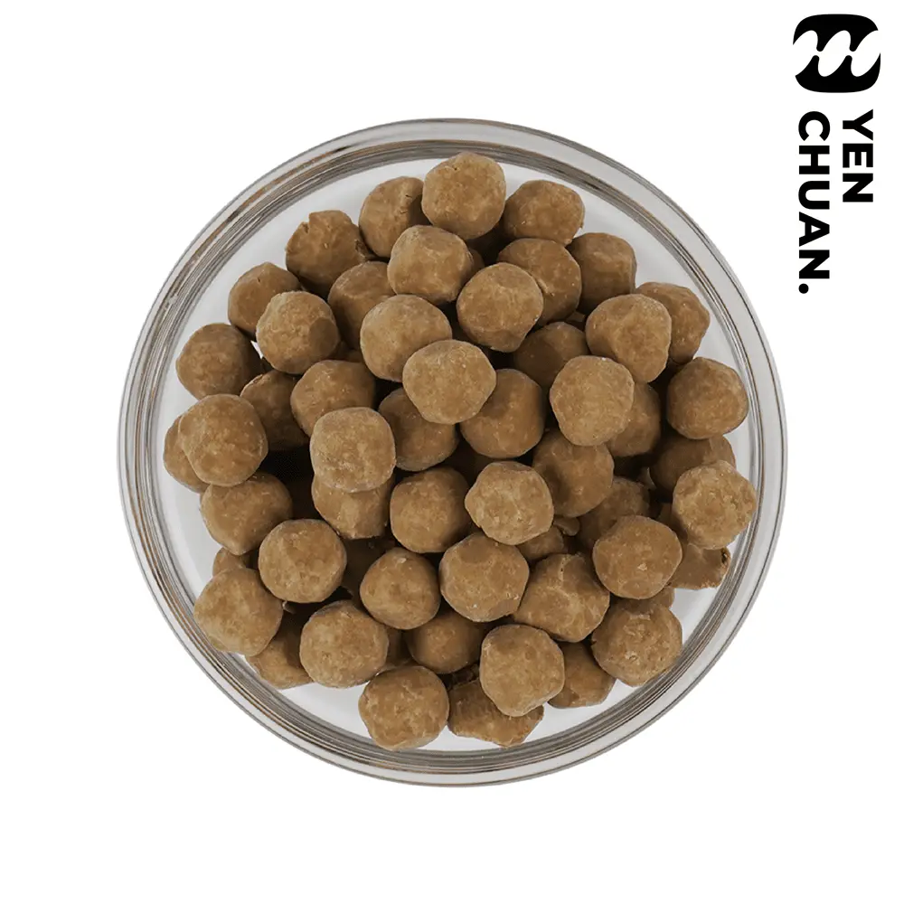

Dried black tapioca pearls
The classic companion to bubble tea, dried tapioca pearls are the most common option.
With or without preservatives – take your pick!
Preview only: no inquiry is sent here. Wholesale prices, MOQ, lead time and shipping require confirmation by Yen Chuan.
Details
Sizes available: 10mm/8mm/7mm/4mm
Unit size: 3kg
Units per carton: 6
How to cook: Heat in boiling water for 30 minutes, turn off the heat and stew for another 30 minutes with the lid on. Sieve and serve!
The pearls are already flavoured with brown sugar, for a stronger taste soak the pearls in sugar syrup before serving.
Product specifications are based on tapioca pearls with preservatives, contact us for information regarding pearls without preservatives.
 Long-lasting tapioca pearls
Long-lasting tapioca pearls Instant tapioca pearls (room temperature)
Instant tapioca pearls (room temperature) Frozen dried tapioca pearls
Frozen dried tapioca pearls